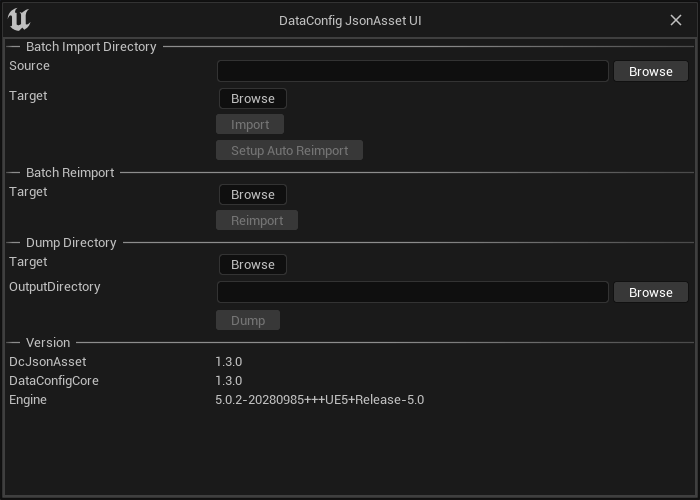

Tooling
The plugin also comes with a few supporting tooling and settings.
Settings
"DataConfig JsonAsset" settings can be found in "Project Settings" with the same name:
| Name | Usage |
|---|---|
| Suffixes | The file suffix that this plugin looks for. If you're already using .json suffix for other purposes you can add or change a new one. |
Console Commands
We also provide some handy commands that can be used for batch processing.
| Command | Example | Usage |
|---|---|---|
Dc.ImportDirectory | Dc.ImportDirectory "C:/Src/Dir" "/Game/Target" | Recursively import source directory into content |
Dc.ReimportDirectory | Dc.ReimportDirectory "/Game/Target" | Recursively reimport content directory |
Dc.SetupAutoReimport | Dc.SetupAutoReimport "C:/Src/Dir" "/Game/Target" | Setup Auto reimport entry in editor settings |
Dc.DumpDirectory | Dc.DumpDirectory "/Game" "C:/JsonOutput" | Recursively dump all DataAssets to JSON files |
Context Menu Actions
Right click on any asset and there's DataConfig JSON Asset sub menu:

| Name | Usage |
|---|---|
| Dump To Log | Dump selected assets to Output Log |
| Dump To JSON | Dump selected assets to Output Log as JSON |
| Save to JSON | Serialize selected assets as JSON and save to disk |
See caveats for dump details.
Tool UI
Finally we wrapped the commands above into a tooling panel, which can be found at "Windows -> JsonAsset Tool" menu:
